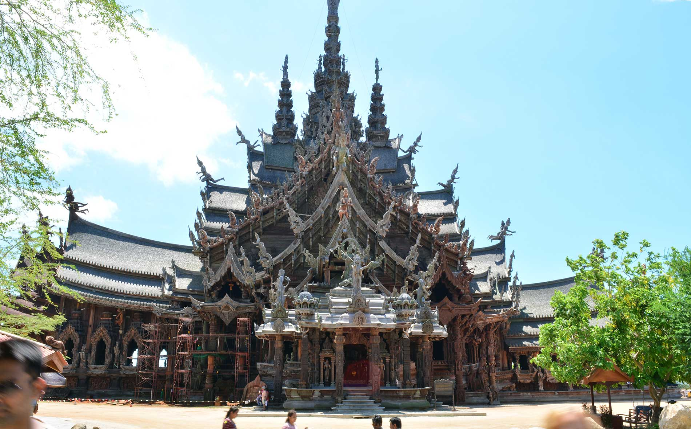
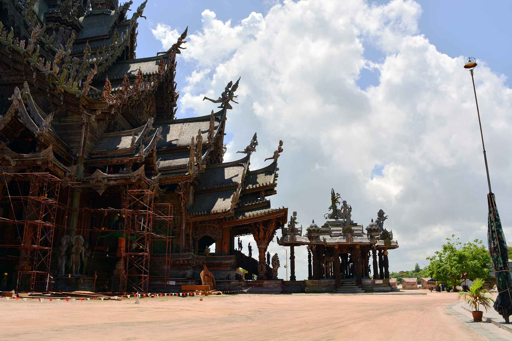
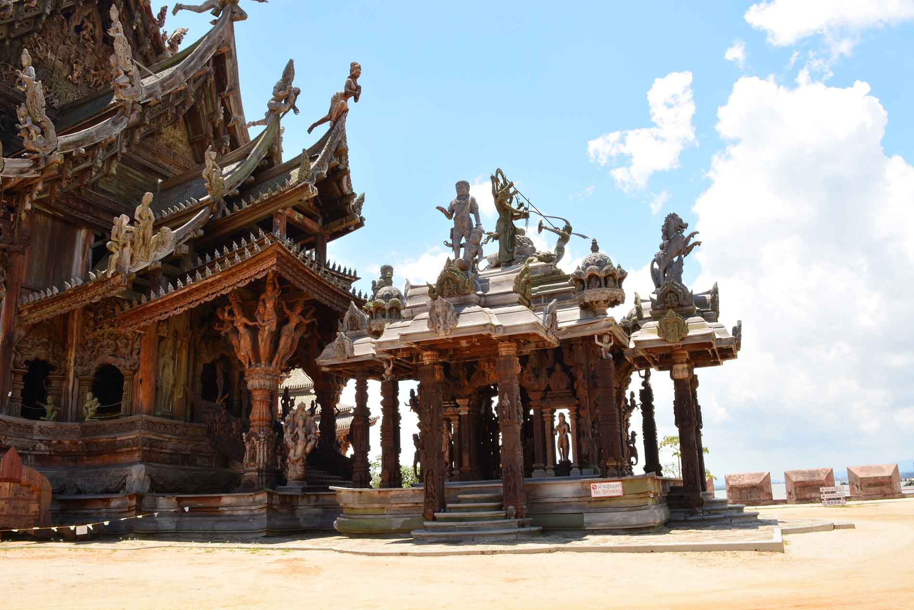
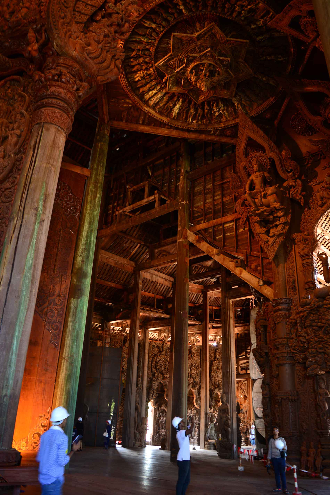
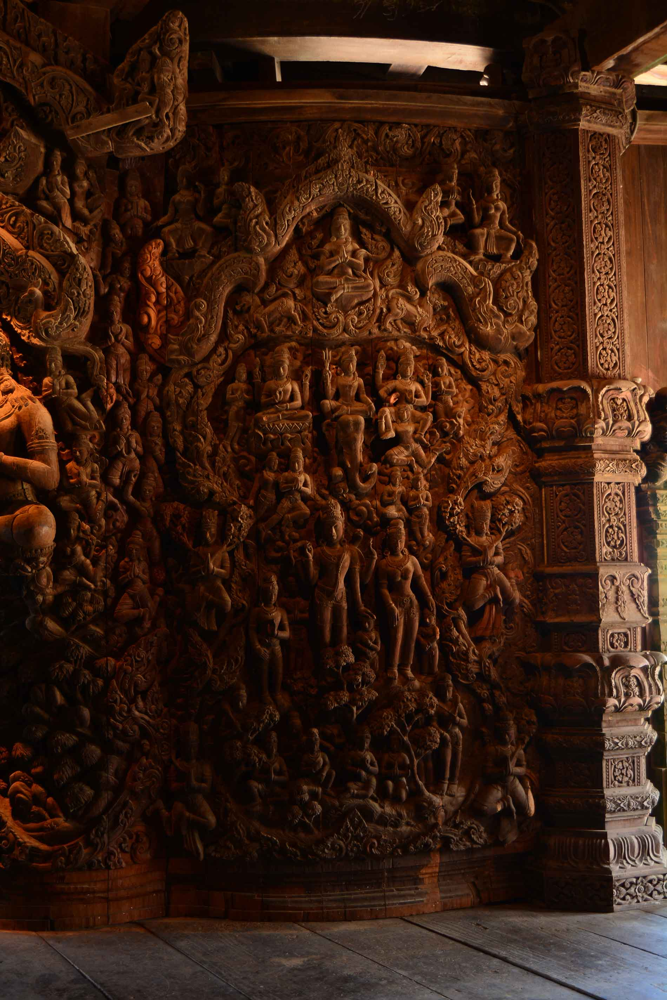
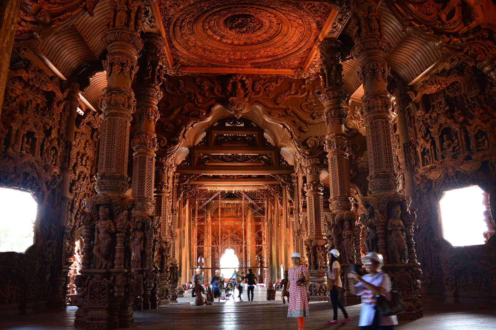
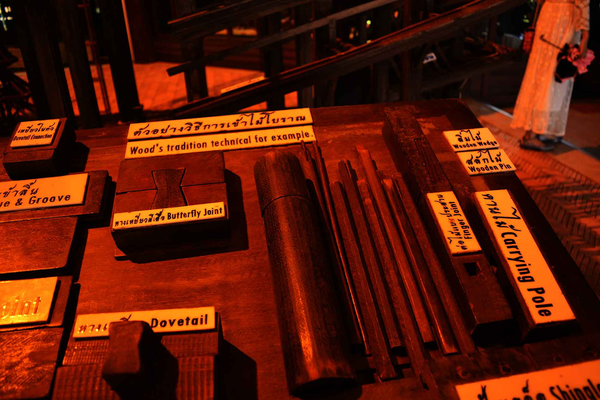

<html></html>
<head>
  <link rel="stylesheet" href="dist/assets/styles/thailand_story.css"/>
  <link rel="stylesheet" href="dist/assets/styles/main.css"/>
  <link href="https://fonts.googleapis.com/css?family=Roboto+Slab|Josefin+Sans" rel="stylesheet" type="text/css"/>
  <title>Sanctuary of truth</title>
</head>
<body>
  <section class="thailand_story clear">
    <div class="content change1">
      <h2>Sanctuary of truth, Pattaya, Thailand
        <p><a href="souvenirs.html">Back</a></p>
      </h2>
    </div>
    <p>
      <span>The Sanctuary of Truth, Pattaya</span><br>
      Thailand is not just a country but a Kingdom. It is not just land but Subarnabhumi (the golden land).
      The Sanctuary of Truth at Pattaya is a place where the time freezes to tell the story of the past.
      Sanctuary of Truth means “a temple or a holy place where the actual truth of human life can be realized”.
      Other names: Wang Boran and Prasat Mai<center></center>
    </p>
    <p>
      Location: The Sanctuary of Truth is a gigantic wooden construction in Pattaya, Thailand.  It is constructed on the seashore at Rachvate Cape, Tumbon Naklea, Amphur Banglamung, Chon Buri Province.
      Started: The project was initiated in 1981, and is scheduled to be complete in 2050.
      About the Founder:  Khun Lek Viriyaphant (1914 - 2000) was a Thai millionaire who was behind the construction of Muang Boran or The Ancient City, Erawan Museum and Sanctuary of Truth. In 1941, Lek Viriyaphant and his wife ran an import business.<center></center>
    </p>
    <p>
      Type of Architecture: The style of the sanctuary is in Khmer architecture. The images from Buddhist and Hindu religions and mythologies of Cambodia, China, India and Thailand are adopted in the Sanctuary of Truth. The building consists of four sections pointing in a cardinal direction and the sections are joined to a central core. The sculptures both inside and outside the sanctuary are a blend of Hindu, Khmer, Chinese (Taoist and Confucianism) and Thai influences. In this ‘Wooden Sanctuary’ all  parts emerging from its foundation are built of wood.    
      Overview: The Sanctuary of Truth is a gigantic wooden construction which covers the area of more than two rais by the sea at Rachavate Cape at the northern end of Pattaya
      Bay.  The huge teak building is 105 m high.
      The Philosophy of the Sanctuary of Truth:
      According to the official website, “The purposes of decoration with wooden carve sculptures are to use art and culture as the reflection of Ancient Vision of Earth, Ancient Knowledge, and Eastern Philosophy. With in this complex, visitors will understand Ancient Life, Human Responsibility, Basic Thought, Cycle of living, Life Relationship with Universe and Common Goal of Life toward Utopia.”
      "Only truth and goodness are immortal", is the real motive and essence of Sanctuary of Truth. The Sanctuary was based on truth and goodness drawn from religion, philosophy and art.
      The second half of the 20th Century until today, the world was under the influence of materialism and over-reliance on technology neglecting in the process traditional values, morality and spiritual contentment. Their attempts to control nature have transformed many people into egotistical individuals who are out to destroy one another through incessant wars and economic plundering.
      True happiness is found in intrinsic spiritual pleasure and not in materialistic pleasure. Ideals make human life more meaningful, determination to go to the ideal world is something desired by all men. Every belief, every religion and every philosophy leads there by difference paths.<center></center>
    </p>
    <p>
      Architecture: The Sanctuary of Truth consists of four sections. Each section points in a cardinal direction and is joined to a central core. The sections have stepped roof. There are four spires at the four corners of the roof and a central spire. There are side four halls and a central hall. The four halls are linked to a Central Hall which stands for enlightenment or nirvana.
      The Spires-
      On top of the tallest central spire is Kalaki riding on a horse, the symbol of Phra Sri Ariyametrai. Phra Sir Ariyamethai was the last Bodhisattva to achieve enligtenment in the world and become the fifth Buddha in the Bhadhra era,i.e., the present era
      On top of the four spires of the sanctuary, the four elements that will lead to the ideal world according to Eastern philosophy are presented. The four spires at the four corners of the roof symbolize religion, life, knowledge and peace. 
      -          Female celestial holding a book represents “The continuation of immortal philosophy, precept, morality and deed.”  - Male celestial (Deva) holding a lotus flower, represents “The establishment of religion (the pillar of the world)”.  - The celestial body holding a child and leading elderly , which represent life bestowed upon human beings ( To encourage scholar of the past and to create eternal Peace for all mankind through future).  - Female celestial with a pigeon perching on her hand and holding an ear of paddy , symbolizing Peace, Wealthy and Balancing World.
    </p><center>
    <ul id="img_list">
      <li></li>
      <li></li>
    </ul></center>
    <p>
      The Halls-
      The four halls of the sanctuary each represents an aspect of the universe and values to nurture and cherish. This is a sanctuary where people recognize the seven creators and the four elements that will lead to the ideal world. The sanctuary embodies the seven Creators essential for Man’s existence- Heaven, Earth, Father, Mother, Moon, Sun and the Planets. 
    </p>
    <ul>
      <li><span> West Hall (1st hall /Origin)</span></li>
    </ul>
    <p>
      The West Hall symbolizes the creation of the universe where all things begin. The Universe created systems orbits and Earth. Earth planet composed with Great four elements - Earth, Water, Wind and Fire.

The façade of the West Hall has a distinct Hindu character. You will see sculpture of the Indra and the three-headed elephant Airawat . Four faced Brahman surmounts the transept of the front pavilion. Brahma is believed to be the creator of the world and He is one among the Trimurti. 

The Hall holds Trimurti, the Trinity of Hindu Gods, Shiva (God of earth and fire- Beginning to end), Vishnu (God of water- Preserver) and Brahma (God of the sky and wind - creator of the universe). For this reason the tour of the sanctuary starts from the West Hall.
      Carved work show the Mahabhutas or the great four elements- earth, water, wind and fire. The gods who control these four elements are Brahma, Shiva and Vishnu.
      Shiva is shown on top of the Kailash Mountain. Shiva has third eye on his forehead and whenever he opens his third eye, everything burns and turns into dust.
Vishnu rests on Ananta Nagaraj and above this, is the scultpture of Vishnu’s Viswaroopa (an episode of Srimad Bhagavat Gita).
      Brahma is shown on a swan.
      Buddhism believed all beings cause by Self-incidence spring element, mass, substance power and cause phenomenally (ignorance). It’s nature beginning to end.

Huge wooden Bodhisattava’s face represent the sublime states of mind virtues of leaders, are Love, Kindliness, Compassion, Sympathy and Equanimity. On top roof Bodhisattava step on Kilena and swan present the land great virtues monarchy.
    </p>
    <ul>
      <li><span> South Hall (The 2nd hall)</span></li>
    </ul>
    <P>
      The sculptures in the South Hall represent the sun, moon and the gods of the planets in the Solar System which influence the course of human life and events. The Sun causes day and night. The Moon causes tide. The planets move around the orbit.
      Each star or planet symbolizes certain qualities. Incidentally the days of the week in Thai are named after these stars and planets. 

 
Sun – honor and social status (Sunday) 
Moon – beauty (Monday) 
Mars – courage and industry (Tuesday) 
Mercury – gentleness (Wednesday) 
Jupiter – wisdom (Thursday) 
Venus – wealth (Friday) 
Saturn – unhappiness and suffering (Saturday)
    </P>
    <ul>
      <li><span>East Hall (The 3rd hall)</span></li>
    </ul>
    <p>
      Wood sculptures on the pediment of Mahishasuramardini, an episode of Durga defeating Mahisa, symbolizes ignorance conquered by wisdom.
      Wood sculptures in the front gable are of parents, as the creators who give life to their offspring. Parental love is clean and pure. The Hall depicts Father and Mother who bring children into the world, who love, care and nurture their off-spring with the power and purity of parental love. Children in return respect and show gratitude to their parents.

The East Hall also promulgates these values. 

"The physical and material deteriorate with time. Ideals give direction to life. Every belief, religion and philosophy leads to the same goal along different paths. Only Truth and Goodness are immortal. 
      Acquire knowledge, let wisdom conquer ignorance, live for humanity and create peace, these are goals great men strive for." 
    </p>
    <ul>
      <li><span> North Hall (The 4th hall)</span></li>
    </ul>
    <p>
      The values promulgated here are – “good deeds and sacrifice free man from desires. Men though born under different circumstances can be released from the cycle of life by leading good lives and performing good deeds. 
Those who sacrifice and suffer for their fellow-men yet decline enlightenment like Guan Yin are accorded the status of Bodhisattva." 
      Wood sculptures consist of Chinese supernatural beings, including the Bodhisattava (as viewed by Mahayana Buddhism). Mahayana Buddhism is called the large vehicle, that will carry people across the cycle of birth and death.
      Chinese concepts of Taoism and Confucianism pervade the North Hall. Guan Yin the Goddess of Mercy is present in several sculptures. 

Bodhisatava is the one who will become enlightened and be Buddha, but declines to reach nirvana, wanting to save men from suffering first. His main attributes are love compassion, selflessness, sacrifice and his capacity for service to others is unlimited world. There are countless Bodhisatavas in Mahayana Buddhism, such as Bodhisatvalikotesavara (Kuan Yin), Bodhisatva Manyachusri. Although born under different circumstances, if they conduct good deeds and live good lives, men can be released from the cycle of karma.
      All the pillars have 8 sides, as 8 is considered as a lucky number in Chinese culture.
    </p>
    <ul>
      <li><span>Central Hall (MAHABUSSABOKA)</span></li>
    </ul>
    <p>
      The Busabok Stupa stands in the Central Hall with relics of Buddha stored at the top symbolizing enlightenment .At the heart of The Sanctuary of Truth is an exhibition of Buddha tooth relics. They were presented to the temple in April 2009 by the late Supreme Patriarch of Thailand.
      The Buddha discovered Four Noble Truth (The way of life). One can follow the Middle Way of self-conquest which leads to a complete cessation of suffering and sorrow, which is Nirvana, the ultimate goal of Buddhists. In Buddhism, the four kharmas of a Brahman include kindliness, benignity, rejoicing in others’ good fortune and equanimity.<center></center>
    </p>
    <p><span>Some Significant carvings and statues inside and outside the Sanctuary-</span></p>
    <ul>
      <li>There are carvings depicting episodes from the Krishnavatar, the 8th reincarnation of Vishnu. This include Krishna on his cow Vardhana, Krishna standing on the head of Naga, Krishna and the cowherds, and Krishna on a swing with Radha.</li>
      <li>Carvings of Dasavatara.</li>
      <li>The wooden statues of Ganesh, Narasimaha, Vishnu and Shiva are present.</li>
      <li>Wood carvings of stories from Mahabharta and Ramayana.</li>
      <li>Panels depicting stories from Ramayana (fight between Bali and Sugriva) adorns the base of the sanctuary.</li>
      <li>The use of Makara (as per Hindu Mythology it is a sea animal composed of half terrestrial and half aquatic animal) on corner of the lintel is also significant.</li>
      <li>On the roof, there is the statue of Garuda carrying Lord Vishnu and his consort Lakshmi.</li>
      <li>The statues of Naga Devata (serpent king) and Naga Kanya (serpent queen).</li>
      <li>The statue of Garuda with the naga can also be seen.</li>
      <li>The board carving of Ardhanarieshvara and above it the smaller statues of Indra on elephant, Brahma on swan and Vishnu on Garuda.</li>
      <li> The board carving of Anantasayana Vishnu and above it the Vishwaroopa of Vishnu</li>
      <li> Statues of celestial men riding lion, tiger, horse and Gajasingha (mythical animal composed of head of an elephant and the body of a lion).</li>
      <li>The statues of celestial Devtas at the tip of roof seem to fly in heaven.</li><br><center></center>
    </ul>
    <p>
      <span>Construction feature </span><br>
      Like all traditional Thai buildings, there are no nails used in the construction. Every pillar, beam, rafter or board is held together by various types of wooden joints.
      Wooden construction technique and tools
    </p>
    <ul>
      <li>Lap Joint</li>
      <li>Tongue and groove</li>
      <li> Dovetail connection</li>
      <li> Dovetail</li>
      <li> Wooden pin</li>
      <li>Shingle roof</li>
      <li> Wooden wedge</li>
      <li>Mortise and tenon joint</li>
      <li>Finger joint</li>
      <li>Carrying pole</li>
    </ul>
    <p>There is a workshop, where a team of creative wood carvers constantly work for the completion of the sanctuary. They also make carvings for the repair, replacement and restoration of different parts of the sanctuary. All the delicate and beautiful carvings are done by hand.</p><p style="text-align:right"><a href ="https://www.facebook.com/profile.php?id=100008910303421">-Ajitanshu Ray</a></p><a href="index.html">
      <button>back to home</button></a>
  </section>
  <section id="footer" class="footer clear">
    <center>
      <div class="content clear">
        <div class="content-1">
          <p><span>WALK</span> <br> 4B/28, 2nd Floor, Tilak Nagar, New Delhi, Delhi 110018.
            <!--a(href='support.html') read more &#10140;-->
          </p>
        </div>
        <div class="content-2">
          <div class="content-2-1">
            <p><span>TALK</span><br> the.rovers@outlook.com</p>
          </div>
          <div class="content-2-2">
            <p><span>STALK</span>
              <ul id="social_icons">
<li><a href="https://facebook.com/rover.org"></a></li>
		<li><a href="https://twitter.com/rovers_org"></a></li>
		<li><a href="https://instagram.com/the.rovers"></a></li>
                  <li><a href="https://www.youtube.com/channel/UCAH9TX_LhImPk9YEKKjf26A"></a></li>
                  <li><a href="https://plus.google.com/100252120756478981295"></a></li>
                  <li><a href="http://issuu.com/therovers"></a></li>              </ul>
            </p>
          </div>
        </div>
      </div>
      <p class="rightpara">copyrights@2015 rovers.org.in</p>
    </center>
  </section>
</body>